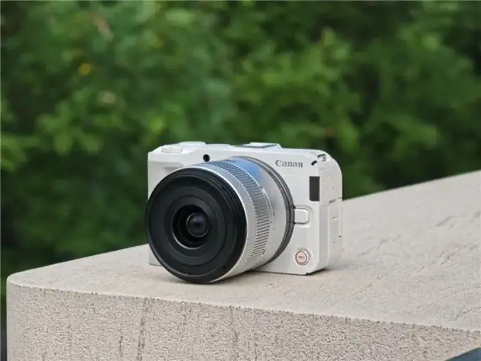
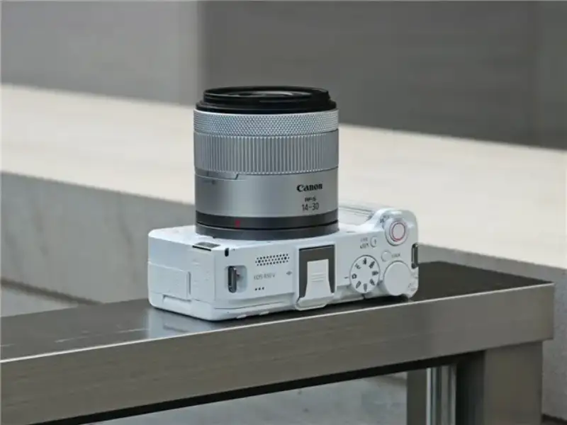
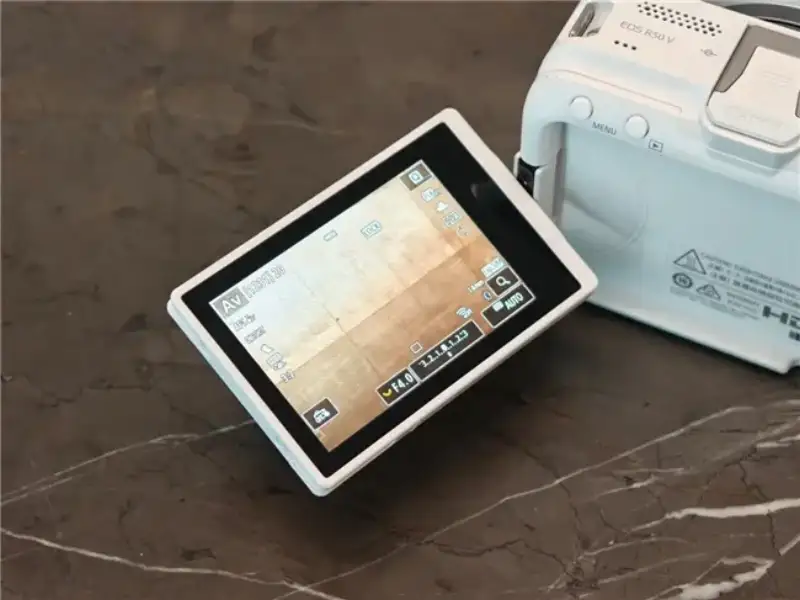
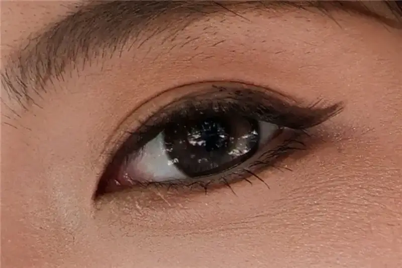
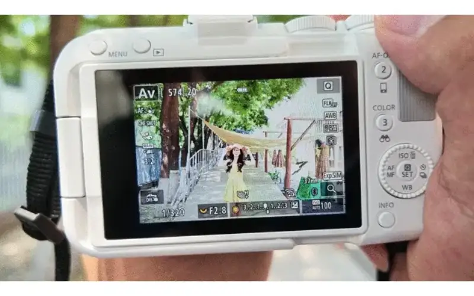
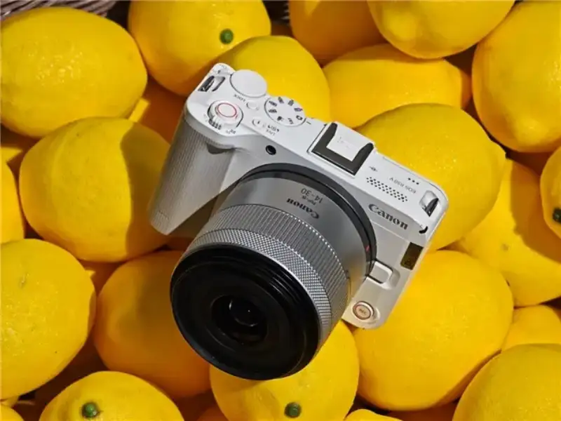

More and more young users now want a camera that does both photos and video. It has to flatter people, be light and easy to carry, and give simple results. It also has to shoot vlogs, so one device covers many uses with no friction. The Canon EOS R50 V is one camera that meets these needs.

Canon EOS R50 V
The Canon EOS R50 V has a 24.2-megapixel sensor. It can shoot 6K oversampled 4K30P video. It also has the second-generation Dual Pixel AF system, which can recognize many subjects, including people, animals, and vehicles. It fully meets the needs of everyday shooting. Recently I used this Canon EOS R50 V for a while. Below I will briefly share my experience.

Canon EOS R50 V
Light and compact, with a simple, modern body design
Let us start with the look of this camera. Compared with the earlier EOS R50, the biggest change on the Canon EOS R50 V is that it drops the prism hump and uses a flat-top design. The whole body looks clean and modern. The camera weighs about 370 g, including the battery and memory card, and measures about 119.3 x 73.7 x 45.2 mm. It is very small and light. Whether you shoot for a long time or carry it as a daily accessory, it does not feel like a burden.

Canon EOS R50 V
The Canon EOS R50 V comes in black and white, and we got the white version. The grip on the right side of the body is a comfortable size, and the gray-white grip covering further improves the hold. Canon also redesigned the button layout and the interface of the EOS R50 V, so it is easier to adjust the settings when you shoot vertical video.

The Canon EOS R50 V has a tilting screen
The Canon EOS R50 V has a side-tilting screen of about 1.04 million dots. It tilts up to 270 degrees, which makes it easy to frame selfies and to shoot from a low or high angle. The good screen quality also helps you preview the results in all kinds of light.

Canon EOS R50 V
The RF-S14-30mm F4-6.3 IS STM PZ lens we tried this time is a power-zoom lens made for video. It is small and light, and it pairs well with the EOS R50 V body. The lens has a built-in power zoom. With the body, it opens up more creative video tricks, and you can even do the popular Hitchcock zoom shot with ease.
With the RF-S14-30mm F4-6.3 IS STM PZ, you can easily do the Hitchcock zoom
For ports, the Canon EOS R50 V has an external mic jack, a 3.5 mm headphone jack, a remote port, a Micro HDMI output, and a USB Type-C port. Besides data transfer and live streaming, the Type-C port can also charge the EOS R50 V, so you can top up outdoors.

The Canon EOS R50 V has a USB Type-C port
Strong image quality
After the look and the controls, let us see how the Canon EOS R50 V actually renders image quality.
The Canon EOS R50 V has an APS-C sensor of about 24.2 megapixels and a DIGIC X image processor. It gives strong image quality. In the sample below, the Canon EOS R50 V not only reproduces color accurately, it also looks clear and sharp. Even at 100 percent zoom, you can still clearly see the eyes and skin detail. This also means you have plenty of room to crop later.

Shot with the Canon EOS R50 V

Still good image quality at 100 percent zoom
When it comes to portraits, Canon's long history with color is a big reason many users choose it. Back in the DSLR era, many photographers liked how Canon cameras rendered skin tones. The skin looks natural and comfortable, with no heavy retouched feel. This color science carried over into the mirrorless era. The straight-out-of-camera skin tones on the EOS R50 V are realistic, so you get good results shooting people every day with little post-processing.
Shot with the Canon EOS R50 V
Shot with the Canon EOS R50 V
Shot with the Canon EOS R50 V
The high-ISO image quality is also satisfying. The Canon EOS R50 V offers ISO 100 to 32000, extendable up to ISO 51200. In the samples, even at ISO 3200 there is only very slight noise. It affects the frame a little, but not badly, and the photo is fully usable.
Shot with the Canon EOS R50 V
Focal length: 47mm, shutter speed: 1/1000 s, aperture: f/2.8, ISO: 3200
At 100 percent zoom
Fast and precise focusing
Besides image quality, focusing is also a key factor when we choose a camera. The Canon EOS R50 V uses the second-generation Dual Pixel AF system. It can automatically detect many subjects, including people, animals, and vehicles, and it focuses fast and precisely whether you shoot photos or video.
In the screen recording below, even when the person is very far from the lens, the Canon EOS R50 V still recognizes the person accurately, giving us a fine focus experience.

Screen recording of face-detection focus on the Canon EOS R50 V
The Canon EOS R50 V also supports a burst rate of about 15 frames per second. With strong focusing, it is easier to catch the moment.
The Canon EOS R50 V supports up to about 15 frames per second
Video features for beginners and advanced users
For video, the Canon EOS R50 V supports 6K oversampled 4K30P. It also offers cropped 4K60P and FHD 120P. It has built-in color modes and color filters, so you can shoot video with strong color straight out of the camera.
The frame below is a 4K 30P video clip from the Canon EOS R50 V. Even at 100 percent zoom, the detail stays clear. As a compact video camera, the Canon EOS R50 V fully meets everyday recording needs.
4K 30P video frame from the Canon EOS R50 V
Still good image quality at 100 percent zoom
The Canon EOS R50 V also has the Canon Log 3 color curve, which meets the color-grading needs of advanced video users.
Before and after grading with Canon Log 3
Sample photos and summary
The Canon EOS R50 V is very easy to carry and shoot with. Its strong image quality and precise focusing let you get good results easily. For this review, I used the Canon EOS R50 V with the RF-S14-30mm F4-6.3 IS STM PZ and the RF28-70mm F2.8 IS STM to take some stills. Let us take a look.
Focal length: 65mm, shutter speed: 1/250 s, aperture: f/2.8, ISO: 100
Focal length: 55mm, shutter speed: 1/500 s, aperture: f/2.8, ISO: 100
Focal length: 70mm, shutter speed: 1/640 s, aperture: f/2.8, ISO: 100
Focal length: 52mm, shutter speed: 1/1000 s, aperture: f/2.8, ISO: 100
Focal length: 52mm, shutter speed: 1/1600 s, aperture: f/2.8, ISO: 100
Focal length: 14mm, shutter speed: 1/4000 s, aperture: f/4.0, ISO: 100
Focal length: 28mm, shutter speed: 1/50 s, aperture: f/2.8, ISO: 100
Finally, a short summary.
The Canon EOS R50 V gives solid performance for both stills and video. It is also very simple to use, so even beginners can pick it up easily. Whether you record daily life or shoot a travel vlog, this camera gives a stable and reliable experience.
Thanks to the mature RF mount system, Canon's own lenses cover every type: wide-angle, standard, telephoto, fast prime, and power zoom, from affordable kit lenses to professional fast L-series lenses. Third-party makers also offer many good-value RF lenses for portraits, landscapes, macro, and video. Whether you are a beginner on a budget or an advanced user who wants professional image quality, you can find a lens that fits.

Right now, the Canon EOS R50 V with the RF-S14-30mm F4-6.3 IS STM PZ lens sells for 5899 yuan, which is very good value. If you like to take photos, the EOS R50 V is a great choice.
Disclaimer: the market carries risk, and you should choose with care. This article is for reference only and is not a basis for any purchase.